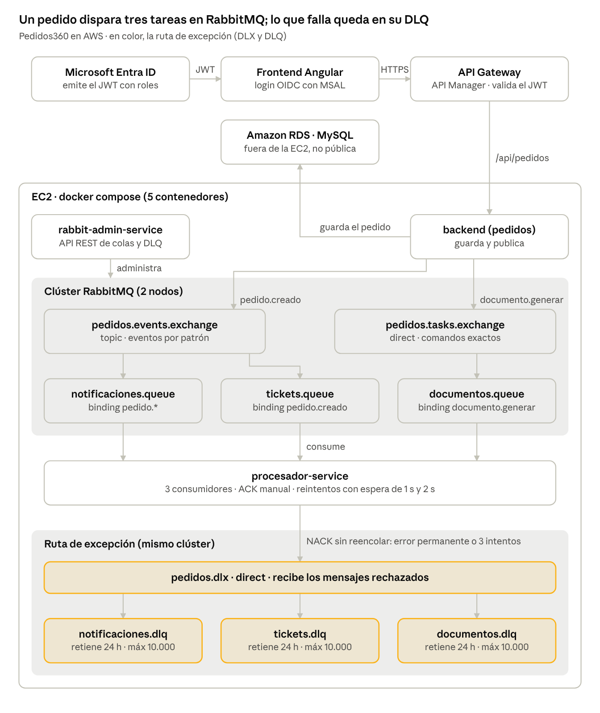

Video Pedidos360 · Evaluación 2 (DSY1107) · Integrante 2 · abre el video
| Duración | 2:00 – 2:30 minutos |
| Qué se ve en pantalla | El diagrama de la última página de este PDF, a pantalla completa. Señala con el mouse cada caja cuando la nombres. |
| Cómo grabar | Win + Alt + R (grabador de Windows), OBS, o una reunión de Teams/Zoom grabada compartiendo pantalla. 1080p, con voz, sin música. |
| Entrega | Archivo parte1-integrante2.mp4 enviado a Sebastián. |
No necesitas AWS, Azure ni el código. Si te equivocas, pausa dos segundos y repite desde el inicio de ese bloque: Sebastián corta el error al unir.
Muestra: el diagrama completo.
"Hola, somos el equipo de Pedidos360. Les vamos a mostrar cómo incorporamos mensajería asíncrona con RabbitMQ al sistema que construimos en la evaluación anterior. Yo explico la arquitectura, Sebastián muestra la demo en la nube y [nombre del Integrante 3] explica el código."
Señala: Microsoft Entra ID, Frontend Angular y API Gateway (fila de arriba) y Amazon RDS.
"Pedidos360 ya tenía un frontend en Angular con inicio de sesión en Microsoft Entra ID, un backend en Spring Boot con base de datos MySQL en Amazon RDS, y un API Gateway en AWS como API Manager. Ahora, al crear un pedido, hay tareas que no deben hacer esperar al usuario: avisar al cliente, generar un ticket y generar el comprobante."
Señala: backend → pedidos.events.exchange → notificaciones.queue y tickets.queue; luego pedidos.tasks.exchange → documentos.queue; al final procesador-service.
"El usuario crea el pedido en Angular. El API Gateway valida el token y lo envía al backend, que guarda el pedido en RDS y publica dos mensajes en RabbitMQ. El primero es el evento pedido.creado, que va a un exchange de tipo topic: la cola de notificaciones está enlazada con el patrón pedido.*, así que recibe cualquier evento de pedido, y la cola de tickets solo con pedido.creado. El segundo es el comando documento.generar, que va a un exchange de tipo direct y llega solo a la cola de documentos, por coincidencia exacta. Un tercer microservicio, el procesador, consume las tres colas."
Señala: procesador-service → pedidos.dlx → las tres DLQ (las cajas en color).
"Si el procesamiento falla por algo transitorio, el procesador reintenta tres veces con espera creciente de 1 y 2 segundos. Si sigue fallando, o si el error es permanente como un dato inválido, rechaza el mensaje y RabbitMQ lo reenvía al Dead Letter Exchange, que lo deja en la DLQ de esa cola. Cada DLQ guarda los mensajes hasta 24 horas y máximo 10.000. Y si RabbitMQ estuviera caído, el pedido igual se guarda: la mensajería no rompe la lógica existente."
Señala: rabbit-admin-service, el recuadro "Clúster RabbitMQ (2 nodos)" y el recuadro de la EC2.
"Agregamos un microservicio administrador con una API REST para crear y eliminar colas, exchanges y bindings, y para monitorear las DLQ. RabbitMQ corre como un clúster de dos nodos levantado con docker compose en una instancia EC2."
Señala: Microsoft Entra ID y API Gateway.
"El token JWT de Entra ID se valida en dos capas: primero en el API Gateway, con un autorizador JWT que revisa el emisor y la audiencia; después en cada microservicio, que revisa firma, emisor, audiencia, vigencia y roles. Crear pedidos exige el rol Cliente y modificar RabbitMQ exige el rol Admin."
"Ahora Sebastián les muestra todo funcionando en la nube."
parte1-integrante2.mp4 y ya se lo enviaste a Sebastián.| ¿Exchange, cola y binding? | El exchange recibe los mensajes y decide a qué colas van; la cola los guarda hasta que un consumidor los procesa; el binding es la regla que une un exchange con una cola. |
| ¿Por qué topic y direct? | Topic para eventos que varias colas escuchan por patrón (pedido.*); direct para comandos con un solo destinatario por coincidencia exacta (documento.generar). |
| ¿Diferencia entre DLX y DLQ? | El DLX es un exchange que enruta los mensajes rechazados; la DLQ es la cola donde quedan guardados para revisarlos (24 h, máximo 10.000). |
| ¿Dónde se valida el JWT? | En el autorizador JWT del API Gateway (emisor y audiencia) y en cada microservicio con Spring Security (firma, emisor, audiencia, vigencia y roles). |
| ¿Y si RabbitMQ se cae? | El pedido se guarda igual en la base de datos; el error queda en el log y no afecta la respuesta al usuario. |
| ¿Las colas están replicadas? | No: son colas clásicas en un nodo. Para alta disponibilidad real usaríamos quorum queues con 3 nodos. |
